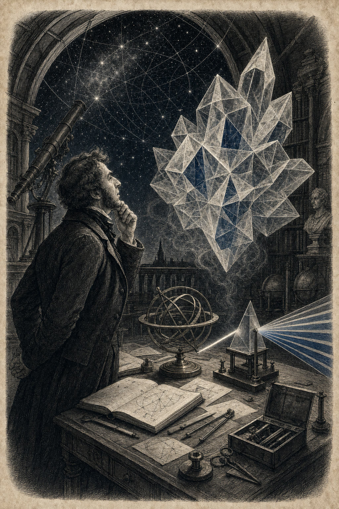

Siete Dimensiones
Del marco teórico de la física a los avances tecnológicos — cómo G, W y N amplían el modelo estándar
Por Jacobus van Merksteijn · 30 min de lectura · 28 de mayo de 2026

Del Modelo Estándar al 7D — ¿Qué No Cuadra?
La física moderna se sustenta en dos pilares: la teoría general de la relatividad para la gran escala (gravedad, curvatura del espacio-tiempo, cosmología) y la teoría cuántica de campos para la pequeña escala (partículas elementales, fuerzas, materia). Ambas están confirmadas con una precisión excepcional dentro de su propio dominio. Y sin embargo: son mutuamente irreconciliables, y dejan sin respuesta una serie de preguntas fundamentales.
Las piezas del rompecabezas que faltan no son pequeñas. Constituyen el corazón de la física moderna:
Materia oscura
~27% del contenido energético del universo no es detectable como materia ordinaria. La medimos a través de la gravedad, pero no conocemos su naturaleza.
7D: Posiblemente un efecto de proyección de configuraciones G/W/N de dimensiones superiores que permanecen invisibles para nuestros instrumentos de medición 4D.
Energía oscura
~68% del universo consiste en una energía desconocida que acelera la expansión. El modelo estándar no ofrece explicación.
7D: La propia estructura del vacío — la dimensión G — puede variar y así producir una constante cosmológica efectiva.
Asimetría bariónica
¿Por qué domina la materia? En el Big Bang, materia y antimateria deberían haberse originado en cantidades iguales. Deberían haberse aniquilado mutuamente.
7D: Nuestro universo es posiblemente un sector W dominado por materia — un estado asimétrico en el potencial de polaridad de la dimensión W.
El marco 7D de Jacobus van Merksteijn no propone sustituir la física establecida, sino integrarla en una estructura más rica. Las leyes 4D conocidas siguen plenamente vigentes — pero como proyección de un ordenamiento más profundo con siete dimensiones: x, y, z, t, G, W y N.
Tesis central: La realidad es fundamentalmente jerárquica. Cada dimensión superior modula la inferior. El espacio-tiempo 4D que percibimos es una proyección estable — pero no completa — de una estructura de siete dimensiones.
Parte I — Marco Teórico
Las Tres Dimensiones Adicionales: G, W y N
¿Qué son, cómo funcionan y qué rompecabezas de la física explican? Una exposición del marco conceptual tal como se desarrolla en la obra académica base.
La Estructura Jerárquica de Siete Dimensiones
Las primeras cuatro dimensiones son familiares. Lo que distingue al marco 7D de las teorías habituales de dimensiones adicionales es la lógica jerárquica: cada dimensión superior modula la inferior, en lugar de simplemente coexistir con ella como una dirección extra.
La intuición central: dado que t ya es la dimensión en la que las configuraciones espaciales pueden evolucionar, el salto a G — una dimensión en la que la escala temporal, la escala de crecimiento y la aparición de masa pueden variar — es menos arbitrario de lo que parece a primera vista. La lógica de la jerarquía dimensional justifica la extensión.
G: Estructura del Vacío, Escala y Masa Efectiva
Estructura del vacío
Determina cómo aparece el espacio-tiempo 4D en distintas escalas. La variación en G modula la masa efectiva de los objetos y el ritmo procesal de los fenómenos.
Sectores de materia
Principio de ordenación para la polaridad materia-antimateria. Describe qué sector del potencial de doble pozo ocupa nuestro universo.
Información interna
Ordenación o indexación de universos paralelos. Cada universo tiene sus propios valores de fondo de G y W. N representa la capa más especulativa.
La dimensión G es uno de los componentes más originales del modelo. Se concibe como una dimensión de tamaño, crecimiento, escala y formación de masa efectiva. Mientras que t describe el cambio en el tiempo, G describe el cambio en la escala de ese cambio.
La fórmula central es:
La masa efectiva medida es la proyección de una masa base, multiplicada por una función de escala que depende de la posición en G, W y N. La masa no es una magnitud absolutamente primitiva, sino la proyección de una estructura de escala más profunda.
Esto tiene tres implicaciones directas:
- Modulación de escala: La misma estructura 4D puede aparecer de forma diferente en distintas escalas — dependiendo de la coordenada G. Esto abre explicaciones para fenómenos cosmológicos en los que las diferencias de escala hasta ahora se han tratado de forma ad hoc.
- Masa efectiva: La masa observada de los objetos no es exclusivamente una propiedad interna 4D, sino que puede depender también de la dinámica en G. Esta es una hipótesis de trabajo que requiere una mayor precisión matemática.
- Ritmo procesal: La velocidad a la que transcurren los procesos puede, en este modelo, estar determinada en parte por la posición en G — lo que abre nuevas explicaciones para las escalas temporales efectivas en entornos extremos.
"El marco 7D plantea una pregunta fundamentalmente distinta: ¿cómo diseño el propio espacio?"
Es crucial subrayar lo que el modelo no afirma: G no es un éter clásico, ni un nuevo medio en el sentido del siglo XIX. Es un nivel de ordenación dimensional dentro del cual las leyes 4D conocidas se mantienen plenamente como caso límite.
W: Sectores de Materia y la Asimetría Bariónica
La dimensión W se interpreta como un campo de polaridad — una simetría sectorial entre materia y antimateria, y posiblemente, en un sentido más amplio, entre orientaciones positivas y negativas del estado físico. El rango: −1 ≤ W ≤ +1.
La pregunta abierta que W busca abordar es una de las más profundas de la cosmología: ¿por qué observamos un universo tan fuertemente dominado por la materia? En la física estándar esto se trata mediante la bariogénesis y la violación de CP en el universo temprano — pero aún falta una explicación plenamente satisfactoria.
El marco 7D ofrece una imagen de ordenación alternativa: nuestro universo quizá sea simplemente un sector W positivo. El potencial de polaridad describe esto formalmente como:
Un potencial de doble pozo en el que el término pequeño εW rompe ligeramente la simetría. Esto es conceptualmente comparable al mecanismo de Higgs — pero aplicado a la dimensión W como principio de ordenación para los sectores materia-antimateria.
Los tres valores de W de un vistazo:
- W = +1: Sector positivo — nuestro universo observable, dominado por materia
- W = 0: Punto de simetría — equilibrio teórico entre materia y antimateria
- W = −1: Sector negativo — un universo especular dominado por antimateria
Esto no es una solución al problema de la asimetría bariónica, sino una imagen de ordenación alternativa que más adelante deberá vincularse a mecanismos físicos reales. El potencial de doble pozo muestra que dos sectores son en principio posibles, pero que uno resulta energéticamente favorecido por la pequeña ruptura de simetría εW.
La analogía con el mecanismo de Higgs es instructiva pero no idéntica: el campo de Higgs rompe espontáneamente la simetría en el espacio de la fuerza electrodébil. W rompe la simetría en un espacio de dimensión superior que ordena las realizaciones de materia y antimateria. La similitud matemática invita a una comparación formal — pero la identificación requiere un desarrollo ulterior.
N: Información Interna e Indexación del Universo
La dimensión N es el componente más especulativo del marco. Representa la ordenación, indexación o recuento de universos paralelos. En algunas interpretaciones, N también puede leerse como una etiqueta para distintas realizaciones físicas completas — cada una con sus propios valores de fondo para G y W.
Lo que distingue a N de una simple colección de universos:
- N no es solo una denominación, sino una dimensión formal dentro del sistema 7D total — con el mismo papel estructural que G y W
- N se conecta con los debates existentes sobre el multiverso en la medida en que estos hablan de colecciones de universos con distintos parámetros — pero formaliza dimensionalmente esa discusión
- N no debe presentarse como una dimensión espacial directamente observable: por ahora es un concepto ordenador, útil como capa teórica superior
Se requiere prudencia: N no cuenta todavía con confirmación empírica directa. El modelo es honesto sobre esta limitación. El valor de N radica en su papel ordenador — dota al marco de la estructura necesaria para hablar de realizaciones físicas fundamentalmente distintas.
En el contexto de las aplicaciones tecnológicas (véase la Parte II), N adquiere una segunda interpretación: no como índice del universo, sino como contenido de información interna de un sistema — los grados de libertad ocultos que no figuran explícitamente en la descripción 4D pero que sí determinan el comportamiento del sistema. Esta doble lectura hace que N sea especialmente fértil para la computación cuántica.
El punto 7D en notación formal:
Todas las magnitudes observables en 4D son magnitudes efectivas que dependen de variables de dimensión superior: Qeff = Q(x, y, z, t ; G, W, N). La estructura métrica general ds² = gAB(X) dXA dXB muestra que el espacio 7D tiene su propia geometría, de la cual el espacio-tiempo 4D es una proyección.
Cómo el Marco 7D Reformula los Rompecabezas de la Física
El marco no es una huida de los hechos, sino un intento de ordenarlos de otra manera. A continuación se compara la formulación convencional con la formulación 7D para varias grandes preguntas abiertas:
| Dominio | Enfoque convencional | Enfoque 7D |
|---|---|---|
| Materia oscura | Buscar una nueva partícula (WIMP, axión, neutrino estéril); medir mediante detección directa | Materia oscura como efecto de proyección de configuraciones G/W/N; medible mediante desviaciones residuales en experimentos de nanofotónica |
| Energía oscura | Constante cosmológica Λ como parámetro libre; origen sin explicar | La dimensión G varía a escala cósmica; Λ no es un parámetro libre sino una proyección de la dinámica de G |
| Asimetría bariónica | Violación de CP en el universo temprano mediante mecanismos de bariogénesis | Nuestro universo ocupa el sector W positivo; la asimetría es estructural, no el resultado de un proceso |
| Jerarquía de masas | El mecanismo de Higgs otorga masa; por qué existe tal dispersión permanece sin explicar | Masa efectiva meff = m₀ · Γ(G,W,N); la dispersión depende de G/W/N |
| Agujeros negros | Singularidad — punto de ruptura de la relatividad general | Régimen en el que la estructura causal cambia tanto que la intuición 4D ya no basta; descriptible en 7D sin singularidad |
| Multiverso | Ad hoc en escenarios de inflación o paisajes de teoría de cuerdas | La dimensión N formaliza la indexación como parte estructural del marco |
Una limitación metodológica: el modelo reconoce que estas son propuestas de reformulación, no pruebas. El poder explicativo solo aumenta si el enfoque 7D produce predicciones únicas y falsables que difieran del enfoque convencional. La vía de la nanofotónica (capítulo 12 de la obra base) es la candidata más concreta.
La Proyección como Principio Explicativo Central
El concepto de proyección es el eje de todo el marco. En este contexto, proyección significa: una ley 4D medida no es necesariamente toda la realidad, sino una forma de aparición estable de un patrón 7D más rico.
La analogía geométrica: un objeto tridimensional proyecta varias sombras bidimensionales. Esas sombras son reales — pero no completas. Dejan de aportar información sobre la tercera dimensión. Lo mismo ocurre con el espacio-tiempo 4D: real y describible con una precisión excepcional, pero posiblemente no completo.
Nuestro espacio-tiempo observable — real, pero una proyección
Dimensiones adicionales G, W, N — ordenadas jerárquicamente
La estructura completa — más rica, pero incluyendo los hechos 4D
El marco 7D no debe formularse como una oposición a la relatividad o a la teoría cuántica. Casi todos los cambios de paradigma exitosos en la física no han destruido el marco anterior, sino que lo han incorporado como caso límite:
- La relatividad especial sigue siendo plenamente válida como caso límite del marco 7D en condiciones estándar
- La curvatura de la luz, la dilatación del tiempo y la estructura geodésica no se niegan, sino que se incorporan
- La teoría cuántica de campos para materia y antimateria sigue vigente dentro del nivel de proyección 4D
Regla metodológica: Todo lo que propone el marco 7D debe, en condiciones ordinarias, reducirse a los resultados conocidos de la física establecida. Solo en zonas límite — condiciones extremas, agujeros negros, el universo temprano — pueden aparecer pequeños efectos residuales.
Parte II — Aplicaciones Tecnológicas
Más Allá de la Física: G, W y N en la Práctica
El marco de pensamiento 7D no se limita a la física teórica. El mismo pensamiento basado en la proyección puede aplicarse a dominios tecnológicos en los que topamos con límites aparentemente insuperables: la computación, la nanotecnología, la computación cuántica y la energía de fusión.
El Patrón Universal: La Misma Limitación, Todos los Dominios
La tecnología moderna se atasca en problemas que comparten una característica común profunda. Millones de parámetros en el aprendizaje automático. Miles de millones de configuraciones en el diseño de materiales. Estados que crecen exponencialmente en la computación cuántica. Trabajamos en espacios de alta dimensión — pero los tratamos como planos.
"El cuello de botella no es la capacidad computacional, sino el marco conceptual."
Estos problemas son problemas de proyección. Trabajamos en un subconjunto limitado del espacio de configuración completo y nos faltan grados de libertad cruciales fuera de nuestro conjunto de parámetros estándar. Igual que los físicos tratan la materia oscura como una "nueva partícula" en lugar de como un efecto de la dimensión W, los ingenieros tratan los problemas como "mejores materiales" en lugar de como diseño geométrico en un espacio ampliado.
Computación: la Optimización de Alta Dimensión como Problema Geométrico
Los algoritmos modernos — aprendizaje automático, optimización, simulaciones científicas — operan en dimensiones extremadamente altas. Las redes de deep learning tienen desde millones hasta miles de millones de parámetros; los problemas de optimización combinatoria tienen espacios de solución que crecen exponencialmente. Cuanto mayor es la dimensionalidad, más difícil resulta encontrar soluciones óptimas.
Las tres analogías G/W/N en la computación:
- Analogía G (métrica del espacio): La "rigidez" del espacio de configuración determina cuán difícil es moverse de una solución a otra. Algunas direcciones son empinadas (gradientes altos), otras planas. Esto es precisamente lo que describe la dimensión G: escala y ritmo procesal del cambio.
- Analogía W (sectores de solución): Buenas soluciones en el "sector A" pueden ser invisibles si solo se busca en el sector B — exactamente igual que las bandas W en la física fundamental pueden acoplarse débilmente. La estructura sectorial en el espacio de soluciones es un fenómeno real en el aprendizaje automático (colapso de modos, mínimos locales).
- Analogía N (contenido de información implícito): Estructura que no está explícita en las características (features), pero que sí determina la optimalidad — simetrías, restricciones, invariantes ocultas en la geometría de los datos.
Llama la atención: los métodos más avanzados ya implementan elementos del pensamiento geométrico 7D — aunque sin esa conceptualización explícita:
- Natural Gradient Descent optimiza en el espacio de distribuciones de probabilidad con su métrica riemanniana natural — precisamente una optimización basada en G
- Manifold Learning descubre estructuras de dimensión inferior ocultas en datos de alta dimensión — identificación de sectores W en el lenguaje del aprendizaje automático
- Neural Architecture Search no busca solo parámetros sino la geometría óptima de la propia red — una aplicación directa de la ingeniería de estructura N
Aportación 7D: La conceptualización explícita de G/W/N convierte esto en algo sistemático en lugar de ad hoc. La pregunta se vuelve consciente: "¿Cuál es la geometría adecuada para este problema?" — no solo "¿qué algoritmo funciona?"
Nanotecnología: Materiales como Configuraciones G/W/N
En nanotecnología se sabe desde hace tiempo que la dimensionalidad cambia drásticamente las propiedades físicas. Sin embargo, el enfoque actual — ensayo y error y cribado computacional — permanece dentro de las clases de materiales existentes. Una funcionalidad radicalmente nueva requiere un pensamiento de diseño radicalmente nuevo.
La perspectiva 7D plantea una pregunta fundamentalmente distinta: "¿Qué configuración local de G/W/N produce, en proyección 4D, las propiedades deseadas — y cómo realizamos esa configuración?"
Tres aplicaciones concretas en las que la perspectiva 7D ya está implícitamente presente:
- Materiales topológicos y computación cuántica: Los aislantes topológicos y los qubits ya utilizan implícitamente una estructura de alta dimensión: el espacio de momentos como dimensión adicional, el espacio de Hilbert para la información cuántica, la coherencia como estructura N. La ingeniería 7D explícita permite un diseño sistemático.
- Metamateriales y propiedades negativas: El índice de refracción negativo, la densidad de masa negativa y el camuflaje (cloaking) se logran mediante arquitecturas nanoestructuradas que transforman la métrica efectiva — pura ingeniería geométrica, exactamente lo que propone el marco 7D.
- Posicionamiento a nanoescala mediante origami de ADN: Desarrollos recientes muestran el posicionamiento 3D a nanoescala de emisores cuánticos con control de valencia. Esta técnica ya manipula G, W y N — el siguiente paso es sistematizarla mediante principios de diseño 7D.
Computación Cuántica: la Decoherencia como Fuga hacia N
Los ordenadores cuánticos sufren decoherencia: la información cuántica se fuga hacia el entorno, lo que hace fallar los cálculos. Los tiempos de coherencia van de microsegundos a milisegundos. La corrección de errores requiere una sobrecarga enorme — miles de qubits físicos por cada qubit lógico. El enfoque convencional: aislar los qubits lo mejor posible mediante temperaturas ultrabajas y apantallamiento electromagnético. La limitación fundamental: el aislamiento total es físicamente imposible — el sistema cuántico siempre debe interactuar con campos de control y equipos de medición.
"La decoherencia no es pérdida — es fuga de información que podemos dirigir."
La reformulación 7D: en el lenguaje de N, la decoherencia no es una "pérdida hacia el entorno" sino una fuga de información hacia la dimensión N. La información cuántica se dispersa sobre un número cada vez mayor de grados de libertad — expansión N. La información sigue existiendo, pero se vuelve inaccesible para nuestro equipo de medición 4D.
La implicación estratégica: en lugar de combatir la decoherencia mediante el aislamiento, controlar activamente cómo se fuga la información hacia N. Diseñar el acoplamiento qubit-entorno de modo que el flujo de información hacia N siga siendo reversible. Implementar protocolos de recuperación de N para recobrar la información antes de que se pierda irremediablemente.
Dirigir la Fuga hacia N: Tres Pasos
Diseñar qubits con topologías y defectos controlados que dirijan la estructura N. Determinar de antemano qué grados de libertad son portadores de información y cuáles sirven como buffer de N.
Medir tanto el estado cuántico como la huella de N mediante los patrones de decoherencia. Utilizar las señales de la decoherencia como portadoras de información en lugar de ignorarlas.
Ajuste de la configuración de N mediante retroalimentación durante el cálculo. Recuperar información de los canales de decoherencia antes de que se pierda de forma irreversible.
Avance esperado: Tiempos de coherencia que escalan con el tamaño del sistema en lugar de disminuir exponencialmente — porque la fuga hacia N se dirige en lugar de combatirse a ciegas. Esto rompería de forma fundamental el estancamiento de la computación cuántica.
Energía de Fusión y la Configuración G
"¿Y si G es modular?"
Si la propia estructura del vacío es configurable, la fusión ya no tendría que ser solo una cuestión de forzar condiciones extremas — sino de lograr la geometría local adecuada.
El estancamiento de la fusión durante 60 años — en el que bombeamos cada vez más energía al plasma para lograr confinamientos cada vez más breves — ilustra el problema central del paradigma convencional. Forzamos condiciones extremas dentro de las leyes naturales existentes, en lugar de preguntar: ¿qué configuración de G produce las condiciones deseadas como proyección?
| Dominio | Enfoque convencional | Enfoque 7D |
|---|---|---|
| Energía de fusión | Forzar condiciones extremas dentro de leyes naturales fijas mediante confinamiento magnético o inercial | Modular la configuración local de G para que las condiciones deseadas aparezcan como proyección 4D |
| Nanoingeniería | Ensayo y error: sintetizar y probar miles de materiales | Diseñar y realizar sistemáticamente configuraciones G/W/N con propiedades específicas |
| Computación | Optimizar parámetros dentro de un espacio de características dado | Diseñar la geometría del propio espacio de configuración |
| Computación cuántica | Minimizar la decoherencia mediante el aislamiento | Dirigir activamente la entropía hacia la dimensión N mediante fuga controlada |
El paradigma 7D lleva la sistemática de la arquitectura a todos los dominios tecnológicos: primero especificar la geometría deseada, después determinar la estrategia de realización. Este es el orden inverso del pensamiento de ingeniería convencional — y ese es precisamente el punto.
Líneas de Investigación Concretas y Comprobabilidad
Un modelo sin predicciones comprobables es filosofía, no ciencia. El marco 7D lo reconoce explícitamente y formula una agenda de investigación por fases. No todo tiene que resolverse a la vez — pero el orden debe ser sensato.
Definiciones operativas
Establecer definiciones operativas de G, W y N para que el modelo sea comprobable. Esta es la prioridad más urgente — sin ella, todos los pasos siguientes son especulativos.
Proyecciones de ejemplo
Desarrollar matemáticamente las proyecciones a 4D con cálculos concretos. Demostrar que las fórmulas centrales conducen a predicciones que difieren del enfoque estándar.
Experimento de nanofotónica
Redactar una nota técnica de concepto en nanofotónica como propuesta experimental. Las nanoestructuras cónicas ofrecen la vía a corto plazo más creíble hacia la comprobación.
Predicciones únicas
Formular un pequeño conjunto de predicciones que distingan al modelo de la física estándar. Desplazamiento de fase adicional, diferencias de tiempo de tránsito, anomalías de dispersión.
Retroalimentación académica
Recopilar y procesar sistemáticamente los primeros comentarios académicos. El modelo está explícitamente abierto a la falsificación — eso no es una debilidad sino la actitud científica correcta.
Extrapolaciones más amplias
Solo después desarrollar extrapolaciones cosmológicas o fundamentales más amplias. Entre otras: energía de fusión, indexación del universo, fuga hacia N en sistemas cuánticos.
Predicciones comprobables experimentalmente (vía de la nanofotónica)
La vía a corto plazo más creíble reside en experimentos de nanofotónica finamente controlados. Las nanoestructuras metálicas cónicas con una estructura superficial controlada pueden producir una fuerte amplificación de campo local y una propagación sensible a la fase. Cuatro observables en los que se pone a prueba el modelo:
- Desplazamiento de fase adicional a lo largo del cono — desviaciones de la propagación de fase esperada que no se explican mediante modelos estándar
- Diferencias de tiempo de tránsito de los pulsos respecto a las muestras de control — residuales tras un modelado completo
- Respuesta de polarización — una respuesta inesperada que no se explica por la geometría conocida de la nanoestructura
- Anomalías de dispersión — el indicio más directo de una corrección 7D
En todos los dominios tecnológicos, el enfoque 7D hace predicciones concretas y falsables: óptimos inesperados (configuraciones que parecen subóptimas de forma convencional pero que resultan superiores mediante la geometría 7D), anomalías de escalado (rendimientos que escalan mejor de lo previsto) y correlaciones entre dominios (estrategias exitosas en ML que son transferibles al diseño de materiales porque usan los mismos principios G/W/N).
Diferencia de Paradigma y Llamamiento: Quitarse las Anteojeras
El estancamiento de la fusión durante 60 años, el progreso estancado en nanomateriales, la persistente decoherencia en la computación cuántica y la maldición de la dimensionalidad en el aprendizaje automático no son problemas independientes. Todos son manifestaciones de la misma limitación fundamental: optimizamos dentro de espacios de configuración demasiado limitados porque no vemos la geometría completa.
El marco 7D propone tres pasos — aplicables tanto en la física como en la tecnología:
Tres pasos hacia un enfoque 7D
- Reconoce la proyección — Identifica que tu problema es una proyección de una estructura de dimensión superior. Pregúntate: ¿qué grados de libertad faltan en mi descripción de parámetros actual?
- Identifica las dimensiones adicionales — Busca las analogías relevantes de G, W y N en tu dominio tecnológico. ¿Cuál es la métrica de tu espacio de configuración? ¿Qué sectores existen? ¿Cuál es el contenido de información implícito?
- Diseña y realiza — Esculpe la geometría deseada en el espacio ampliado y realízala con las técnicas 4D disponibles. Primero especificar la geometría deseada, después determinar la estrategia de realización.
La fuerza unificadora de este paradigma es su propiedad más sorprendente: dominios que hoy parecen separados — la computación, la ciencia de materiales, la computación cuántica, la física fundamental — se convierten en aspectos del mismo principio de diseño. El lenguaje común es el pensamiento geométrico.
"La pregunta no es si la tecnología 7D es posible — sino si somos lo bastante valientes para pensar fuera de nuestra conocida caja 4D."
El marco 7D es, en el mejor de los casos, una especulación seria bajo disciplina. No exige fe, sino una formulación cuidadosa, una comprobación crítica y disposición a la falsificación. Un modelo dispuesto a dejarse acotar, mejorar y, eventualmente, refutar, tiene la actitud científica correcta.
Un modelo que solo resulta atractivo mientras no se investiga no tiene futuro. Este es un primer intento coherente de traducir una intuición amplia sobre la estructura de la realidad en un programa de investigación académico discutible — y, a partir de ese programa, en avances tecnológicos concretos.
Invitación: El debate académico, la precisión matemática y la evaluación experimental como siguiente paso. Las reacciones y las críticas son esenciales — así es como empieza la ciencia seria.